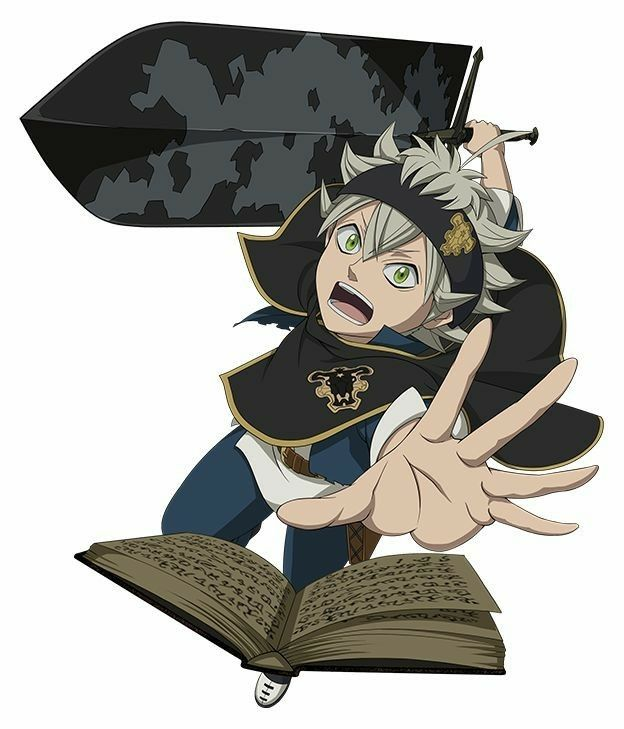

Black Clover

A trama acompanha dois órfãos chamados Asta e Yuno que foram criados em uma igreja do reino de
Clover. No mundo onde o enredo se desenrola todos possuem algum tipo de poder mágico, Asta, porém,
nasceu sem nenhuma habilidade extraordinária para chamar de sua. Yuno, no entanto, possui muita
magia dentro de si e é considerado um prodígio das artes mágicas.
Um dia, ambos escutam de uma das freiras uma história sobre o primeiro Rei Mago e como ele salvou a
humanidade da quase dizimação. A história estimula ambos a quererem se tornar o próximo a receber
tal título, nutrindo certa rivalidade entre os dois garotos.
Asta, ciente de que precisaria compensar sua inata inabilidade para com o uso de mana, começa a
pegar pesado em treinamento físico para que, no dia em que pudesse receber seu grimório, seu corpo
esteja preparado para abrigar a magia fornecida pelo artefato mágico.
No entanto, quando ele e Yuno completam quinze anos e vão para a cerimônia de entrega dos grimórios,
ele não ganha nenhum, reforçando que o garoto realmente não tinha aptidão alguma para desenvolver
poderes sobrenaturais.
Porém, nem tudo está perdido para o protagonista que, pouco tempo depois, recebe um misterioso poder
que lhe permite anular magias em um golpe, fornecido por uma espada e um grimório especial que o
escolhe como seu portador, tornando-o apto para entrar nos Cavaleiros Mágicos, coisa que também é
feita por Yuno, e, ainda que em unidades diferentes, marca o início da jornada dos dois
protagonistas em busca do título de próximo Rei Mago.